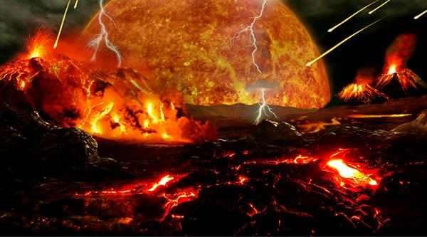
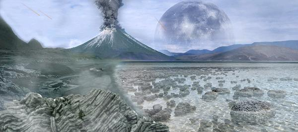
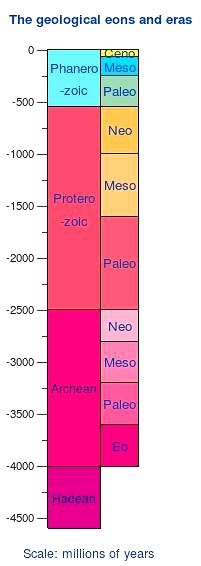
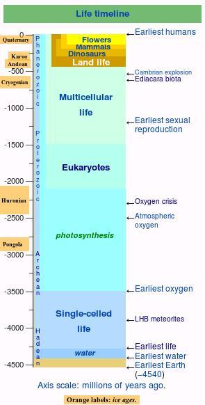

 Formation of the Earth
This artist's rendering pictures the surface of the Earth in the Hadean
eon, soon after the formation of the Moon, possibly by a collision and
re-collision between two bodies, both larger than Mars, about 4.4
billion years ago (most recent and least problematic theory).
Illustration by Tim Bertelink distributed under license Creative
Commons
Attribution-ShareAlike v4.0 International.
 Cradle of Life
This artist's rendering pictures the surface of the Earth in the Archean
eon, when things had cooled down a bit. LUCA (Last Universal Common
Ancestor of life on Earth) came to be during the Eo Archean, about 3.7
billion years ago. It was not the first life form on Earth, but from it
are descended all the life forms we can identify, living or extinct.
Illustration by Tim Bertelink distributed under license
Creative Commons
Attribution-ShareAlike v4.0 International.

